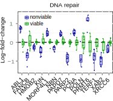
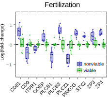
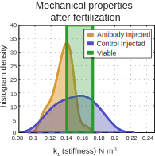

Identifying genes important for embryo development
This project was a continuation of my work on predicting embryo viability. Once I built a classifier to predict embryo development outcomes, I was able to use it to understand differences in gene expression between embryos predicted to be viable and those predicted to be nonviable.
This study yielded insight into what can go wrong early in development to prevent an embryo from resulting in a successful pregnancy. It also resulted in me becoming very comfortable with using R and writing Unix shell scripts, since many tools for gene expression data analysis are written in R, and the data processing pipeline involves a great deal of repetition on large amounts of data (in this case nearly 500 GB!).
This material is drawn from my recently published paper and accompanying code can be found on my GitHub profile.
Motivation
My motivation for working on this project was to answer (or at least start to answer) a fundamental question in developmental biology: why do some embryos develop to term while others don’t? Even in the absence of infertility, only a minority embryos which fertilize successfully are capable of completing development and resulting into a baby. Some arrest early on in development, while others develop for many weeks and ultimately result in miscarriage.
To answer this question, an ideal approach would be to take some sort of biological measurement of embryos (such as gene expression) at the time of fertilization (day 1), and then track their outcomes, either as a binary “baby/no baby” or as a set of possible outcomes such as developmental stage reached. The molecular data from day 1 could then be correlated with the recorded outcome, and genes with the highest predictive power could be investigated further to establish a causal link between misregulation of that gene and developmental outcome.
Unfortunately, this type of study has been difficult to do because biological measurements such as gene expression are destructive to the embryo. To correlate them with developmental outcomes, we would need to accurately predict those outcomes by the time the biological measurement is taken. The only studies which have attempted this type of experiment have used maternal age or egg chromosomal number as their predictor of developmental outcomes. Although these variables are predictive of future viability (for example, a chromosomally abnormal egg will never result in a healthy baby), they are far from perfect.
I thought this would be the perfect opportunity to use my noninvasive day 1 predictor of viability as a better “ground truth” than maternal age or chromosomal status. So at day 1 after fertilization, I measured embryo biomechanical properties to predict their developmental outcome, and measured their gene expression at the same time.

Initial results
I gathered gene expression and mechanical data on 22 day 1 human embryos (sequencing is expensive!), of which 11 were predicted viable and 11 were predicted nonviable based on mechanics. This experiment was run in two batches, with 10 embryos in the first batch and 12 in the second. When I first started the data analysis, I plotted the first two principal components and hoped for a separation by viability, as shown below:

In the plot above, “bad1” and “bad2” are the embryos predicted to be nonviable, while “good1” and “good2” were predicted to be viable, where the “1” and “2” denote the experimental batch number. To my dismay, I couldn’t really see any trend in this plot. The only pattern I could pick out is that within each batch, especially within batch 2, the “good” and “bad” embryos did seem somewhat separated from each other.
After speaking with many other scientists, I learned that batch effects could indeed have a huge effect on sequencing data, and that there is also a large amount of biological variation between different human individuals. An illustration of batch effects is shown below. Within each batch there is separation between the two classes but without knowing which data came from which batch, it is impossible to separate the classes.

This information led me to realize that variation in my data could come not just from batch effects across experiments, but also from genetic variation between the IVF patients who were the parents of embryos in my data set. So maybe if I corrected for “batch” effects across patients I could be left with what I was really looking for: differences between viable and nonviable sibling embryos within each patient.
Correcting for batch effects
This all sounded great, but the only problem was that I had no idea which patient each embryo came from – the only information I had for each embryo was its gene expression data and its mechanical characteristics.
At this point, the only possible thing I could think to do was to look at genetic variants in the gene expression data. Embryos coming from the same parent would likely have similar variations in their sequences, and so clustering them by these variations may reveal groups of sibling embryos. This analysis yielded the following plot of the correlation coefficient between embryo genetic variants:

From this plot, it appears that 7 groups of siblings are present: {14,11,13,16}, {18,17,21}, {12,15}, {20,22}, {10,8}, {6,7}, {3,4}, and there are 5 embryos with no siblings: 2,19,5,1,9. To correct for batch effects between patients we need at least two embryos from each patient (to estimate the variation within that patient), so I ended up excluding the 5 singletons and keeping the 17 embryos with siblings.
I used the sva package in R to correct for the “batch” effects between different patients, and then regenerated the principal component plot from earlier:

This plot looks much better, with perfect separation between the viable and nonviable embryos. This “perfect” separation is likely artificial because there were so few embryos measured for each patient; for a patient with exactly 1 good and 1 bad embryo, of course they appear perfectly separated. With more embryos per patient, this may not hold up.
Hierarchical clustering of embryos post-adjustment for batch effects is shown below, and again shows perfect separation between the viable and nonviable groups.

Differential expression analysis
Now we can actually look for statistically significant differences in gene expression between the “good” and “bad” groups. This analysis was conducted with the edgeR package in R, which returns adjusted p-values for all genes in the input data.
In my data I detected expression of 12,342 total human genes, and of these 1,879 (15%) were differentially expressed between the viable and nonviable embryos with an adjusted p-value (commonly called a q-value) of q < 0.01. A scatterplot of all expressed genes is shown below, where the ratio of gene expression between viable and nonviable embryos is plotted against the total expression of that gene in counts per million. Genes with q < 0.01 are highlighted in blue.

This analysis produced a list of genes along with their q-values as shown below:
"A1CF" 0.00455717138056158
"A2ML1" 0.121807736625973
"A4GALT" 0.534415196889677
"AAAS" 0.927634497435436
"AACS" 0.0475435671977585
"AACSP1" 0.416641010076768
"AADAT" 0.0147765708417153
"AAED1" 0.464401797881947
"AAGAB" 0.370862765530471
"AAK1" 0.00332496124830891
...
...
Now the next step was to make sense out of this long list of genes, to answer questions such as “what biological processes could be altered in nonviable embryos?” To answer this questions, I had to cluster the differentially expressed genes with q-values < 0.01 by biological function.
Gene functional analysis
Luckily, the NIH provides a tool to predict which clusters of biological processes are enriched within a group of gene names, along with q-values for each process in each cluster. For my list of differentially expressed genes, this tool output the following table of biological processes associated with those genes, ranked in order of significance:
| Rank | Cluster name |
|---|---|
| 1 | Nucleotide binding |
| 2 | DNA repair, response to DNA damage |
| 3 | Protein catabolic process |
| 4 | Cell cycle and mitosis |
| 5 | Metal ion binding |
| 6 | mRNA processing and splicing |
| 7 | Regulation of transcription |
| 8 | Intracellular transport and protein localization |
| 9 | Phosphatidylinositol signaling system |
| 10 | ATPase and DNA helicase activity |
| 11 | Protein modification and ubiquitination |
| 12 | Chromatin modification and chromosome organization |
| 13 | Protein serine / threonine kinase activity |
| 14 | Microtubule-based movement |
| 15 | Coenzyme metabolic process |
| 16 | Protein complex assembly |
| 17 | Sister chromatid segregation and spindle formation |
| 18 | Transcription initiation and transcription factor activity |
| 19 | Proteasomal protein catabolic process |
Only the top 19 results are shown because the rest did not reach statistical significance. With this table, it was possible to choose a specific cluster of interest and look at differential expression of only genes within that cluster. For example, cluster 2 contains genes important for DNA repair, and we can look at the expression of each of those genes in viable and nonviable embryos for comparison:

Cluster 9 refers to the Phosphatidylinositol signaling system, which is important for the completion of fertilization. We can now plot the expression of genes involves in the fertilization process:

Up to this point we have been able to identify genes correlated with viability and understand which biological processes may be altered in nonviable embryos. However, this analysis has been purely descriptive and has not established a causal link between misregulation of a specific gene and a change in viability.
Establishing causation
To determine whether a gene impacts embryo viability, we must be able to modulate its function and observe the effect on embryo development in comparison to a control group. In this case, I chose a gene called ITPR1, which is part of the fertilization signaling pathway (cluster 9) and shows reduced expression in nonviable embryos according to the analysis described above.
My hypothesis was that ITPR1 is an important part of fertilization, and so reduced expression can result in incomplete fertilization. This should result in an overly soft embryo (because embryos harden during fertilization), which will not be viable according to my prior research.
Therefore, I decided to artificially reduce expression of the ITPR1 gene by blocking its product with an antibody, and to observe the effects on embryo hardening after fertilization. The experimental design is shown below:
The results of this experiment are shown below, where it can be seen that reducing ITPR1 function via antibody injection results in embryos with lower overall stiffness (orange distribution) compared to a control group (blue distribution). The stiffness values associated with optimal viability are shown for reference (highlighted in green).

Thus, these results have confirmed that proper expression of the ITPR1 gene is important for ensuring optimal embryo stiffness after fertilization, which is important for viability. It is likely that many other genes also play a key role in determining viability, and they would have to be tested one by one to confirm. Still, the candidate genes produced by the gene expression analysis have enabled us to narrow our focus to only genes differentially expressed between viable and nonviable embryos, rather than choosing at random as biologists used to do.
Summary
In summary, the project described here involved:
- Separating human embryos by viability and looking at gene expression within each group
- Finding genes differentially expressed between viable and nonviable embryos
- Identifying biological processes that may be altered based on the differentially expressed genes
- Choosing one specific gene and establishing a causal link between reduced expression and reduced viability